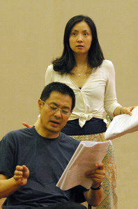

档案摘要
导演：林兆华
主演：濮存昕、陶虹
制作：北京林兆华戏剧工作室
项目：“2006中国易卜生年”及国家话剧院“永远的易卜生国际戏剧季”
项目简介
旧站宣传文案称，《建筑大师》是易卜生晚期的重要作品，并把此次制作定位为林兆华戏剧工作室在“2006中国易卜生年”背景下的项目。页面重点介绍建筑师索尔尼斯在功成名就后与过去、下一代及自我欲望之间的关系。
新版保留这些文字的历史语境，不把旧站中的“第一次中国舞台”等宣传性表述改写为今天的事实结论。
2006 年演出信息
以下全部为备份中的历史信息：8 月 25–27 日、8 月 29 日–9 月 3 日，晚 7:30；地点：首都剧场。旧站票价记录为 880（VIP）、500、380、280、180、100、50、30（学生票）。
剧照


